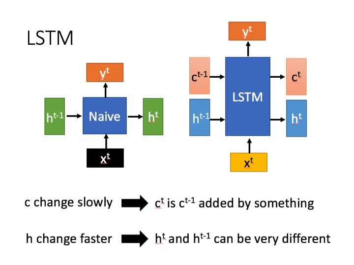
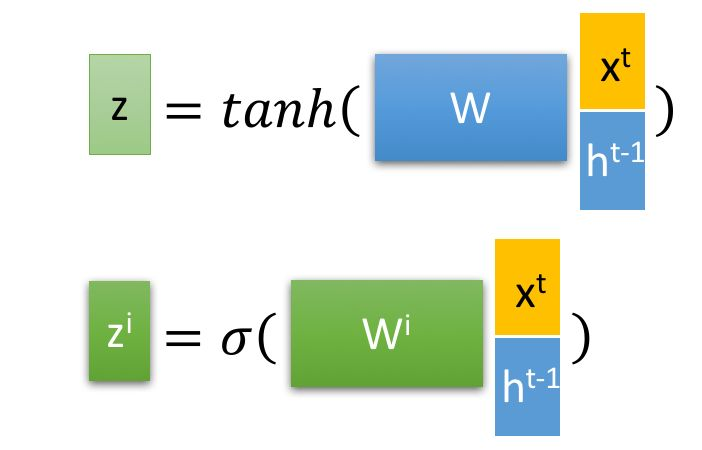
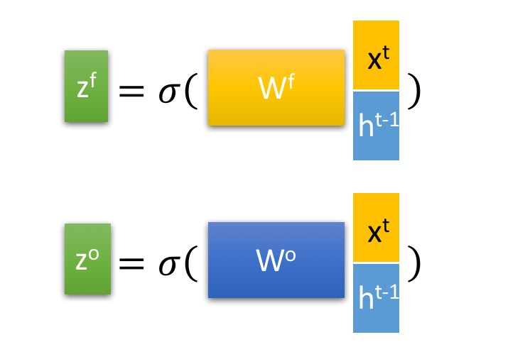
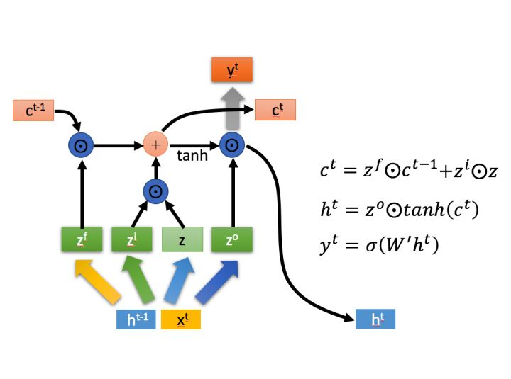
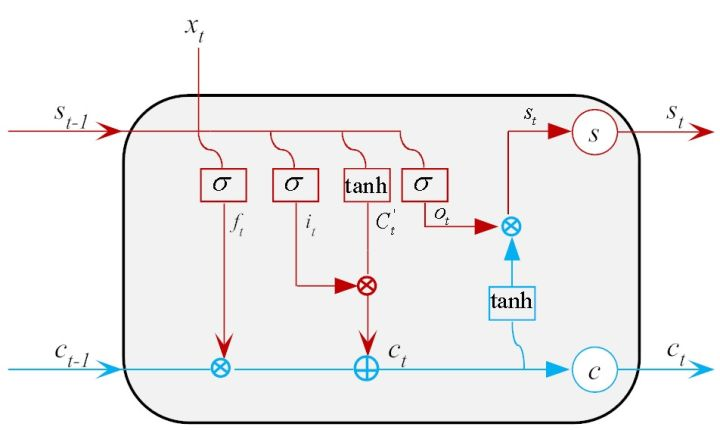

【深層学習】LSTM:Long-Short Term Memory
Structure
其实就是RNN的进化版,从图中可以看出朴素RNN是当前的输出结果不仅和当前时刻的输入有关，还和上层的隐藏层计算结果有关，而LSTM中还加入了$c$，因此LSTM有2个传递状态$h\text{(hidden state)}$与$c\text{(cell state)}$

LSTM利用某时刻输入$x_t$和上一时刻隐藏状态$h_{t-1}$经过运算得到4个状态



Details
遗忘门$z_f$
遗忘门决定了应丢弃或保留哪些信息。来自先前隐藏状态的信息和来自当前输入的信息通过sigmoid函数传递。值介于0和1之间，越接近0意味着忘记，越接近1意味着要保持。
由输出和上一层的隐藏状态来决定遗忘哪些输入门$z_i$与$z$
输入门要更新单元状态，首先，我们将先前的隐藏状态和当前输入传递给sigmoid函数。这决定了通过将值转换为0到1来更新哪些值：0表示不重要，1表示重要。接着你还要将隐藏状态和当前输入传递给tanh函数，以便在-1和1之间取值以帮助调节网络。然后将tanh输出与sigmoid输出相乘。sigmoid输出将决定哪些信息对于输出很重要。
输出门决定下一个隐藏状态应该是什么。请记住，隐藏状态包含有关先前输入的信息，隐藏状态也可用于预测。首先，我们将先前的隐藏状态和当前输入传递给sigmoid函数。然后我们将新修改的单元状态传递给tanh函数。我们将tanh输出与sigmoid输出相乘，以确定隐藏状态应携带的信息，输出的是隐藏状态。然后将新的细胞状态和新的隐藏状态转移到下一个时间步。

cell state
现在我们应该有足够的信息来计算细胞状态。首先，细胞状态逐点乘以遗忘向量。如果它乘以接近0的值，则有可能在单元状态中丢弃。然后我们从输入门获取输出并进行逐点相加，将神经网络发现的新值更新为细胞状态中，这就给了我们新的细胞状态。

输出门$z_o$
输出门决定下一个隐藏状态应该是什么。请记住，隐藏状态包含有关先前输入的信息，隐藏状态也可用于预测。首先，我们将先前的隐藏状态和当前输入传递给sigmoid函数。然后我们将新修改的单元状态传递给tanh函数。我们将tanh输出与sigmoid输出相乘，以确定隐藏状态应携带的信息，输出的是隐藏状态。然后将新的细胞状态和新的隐藏状态转移到下一个时间步。
